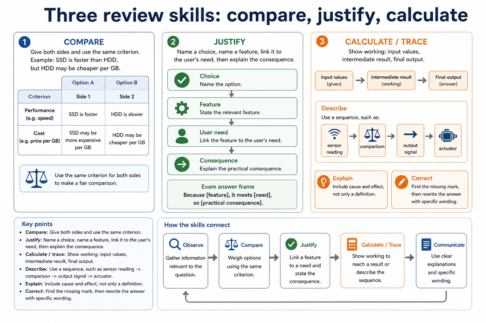
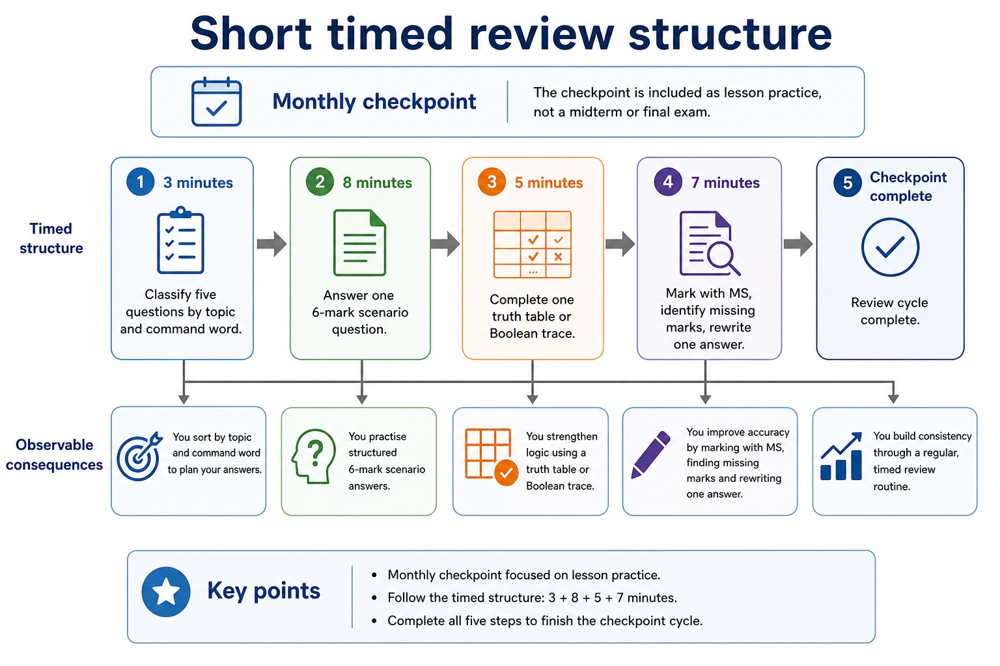

Review is not rereading. Review is catching your brain pretending it remembers.
This lesson reviews Section 3: hardware, storage, embedded systems,
sensors and actuators, logic gates, Boolean expressions, hardware
selection, and reliability. You will identify the topic, choose the
right method, answer under time pressure, then improve the answer.
Recognisewhich Section 3 topic a mixed question is testing
Applycompare, justify and calculate methods accurately
Correctweak answers using CIE-style marking cues
recognise -> retrieve -> answer -> correct
The first mark often comes from opening the right mental toolbox before writing.
Why this matters
Mixed review exposes false confidence. A student may know logic gates but still answer a sensor question like a hardware-selection question.
Common trap
Rereading notes feels productive. Timed retrieval and correction are what actually reveal missing marks.
Warm-up hook
Three mixed questions are on the board. Which mental toolbox opens first?
Click a question. Your job is not to answer yet; first identify what kind of Section 3 thinking it needs.
Click one. The review skill is topic recognition before answer production.
Lesson fact: Link speed, volatility, capacity, durability or cost to the scenario.
Lesson fact: Embedded systems
Lesson fact: Dedicated systems built into larger devices
Lesson fact: describe, explain
Lesson fact: Mention dedicated purpose, limited interface and real-world control.
Lesson fact: Sensors and actuators
Knowledge point 2
Three review skills: compare, justify, calculate
CompareGive both sides and use the same criterion, e.g. SSD is faster than HDD, but HDD may be cheaper per GB.JustifyName a choice, name a feature, link it to the user's need, then explain the consequence.Calculate / traceShow working: input values, intermediate result, final output.DescribeUse a sequence, such as sensor reading -> comparison -> output signal -> actuator.ExplainInclude cause and effect, not only a definition.CorrectFind the missing mark, then rewrite the answer with specific wording.
Exam answer frame: "Because [feature], it meets [need], so [practical consequence]."
Three review skills: compare, justify, calculate

Three review skills: compare, justify, calculate: source-grounded visual explanation.
Lesson fact: Compare Give both sides and use the same criterion, e.g. SSD is faster than HDD, but HDD may be cheaper per GB.
Lesson fact: Justify Name a choice, name a feature, link it to the user's need, then explain the consequence.
Lesson fact: Calculate / trace Show working: input values, intermediate result, final output.
Lesson fact: Describe Use a sequence, such as sensor reading -> comparison -> output signal -> actuator.
Lesson fact: Explain Include cause and effect, not only a definition.
Lesson fact: Correct Find the missing mark, then rewrite the answer with specific wording.
Lesson fact: Exam answer frame: "Because [feature], it meets [need], so [practical consequence]."
Monthly checkpoint
Short timed review structure
3 minutesClassify five questions by topic and command word.8 minutesAnswer one 6-mark scenario question.5 minutesComplete one truth table or Boolean trace.7 minutesMark with MS, identify missing marks, rewrite one answer.
The checkpoint is included as lesson practice, not a midterm or final exam.
Short timed review structure

Short timed review structure: source-grounded visual explanation.
Lesson fact: Monthly checkpoint
Lesson fact: 3 minutes Classify five questions by topic and command word.
Lesson fact: 8 minutes Answer one 6-mark scenario question.
Lesson fact: 5 minutes Complete one truth table or Boolean trace.
Lesson fact: 7 minutes Mark with MS, identify missing marks, rewrite one answer.
Lesson fact: The checkpoint is included as lesson practice, not a midterm or final exam.
Interactive tool
Question sorter
Worked examples
Annotate what earns marks
5-minute quiz
Practice with instant checking
Mistake debugging
Rewrite weak review answers
"SSD is better than HDD because it is faster and good."
SSD has faster access times than HDD, so it is more suitable as a working drive for video editing where large files need to load and preview quickly. HDD may still be suitable for cheaper bulk archive storage.
"The sensor turns on the fan."
The temperature sensor inputs a reading. The processor compares it with a threshold. If the reading is too high, an output signal activates the fan motor/actuator.
Exam-style questions
Section 3 mixed questions with expandable MS
Attempt first, then expand the mark scheme. The MS highlights whether the question rewards comparison, justification, calculation or sequence.
Summary
Section 3 review in six exam habits
RecogniseIdentify topic and command word first.
RetrieveRecall definitions without looking at notes.
CompareUse the same criterion for both sides.
JustifyLink feature to need and consequence.
CalculateShow intermediate logic or method.
CorrectRewrite one weak answer using MS wording.
Homework
Clear tasks
Complete a one-page Section 3 retrieval grid: storage, embedded systems, sensors, logic gates, hardware selection and reliability.
Answer one 6-mark justify question about hardware for a delivery driver using feature -> need -> consequence.
Complete a truth table for Q = (A NAND B) OR C and show intermediate columns.
Rewrite two weak answers from your notes using the relevant MS wording.
Retrieval grid: no full sentences at first; use keywords, then close notes and explain aloud.
Justify: handheld scanner/smartphone, GPS, mobile data, battery life, rugged casing.
Truth table: add A AND B, A NAND B, then final OR with C.
Rewrite: remove vague words such as better/easier/good unless a cause and consequence follow.